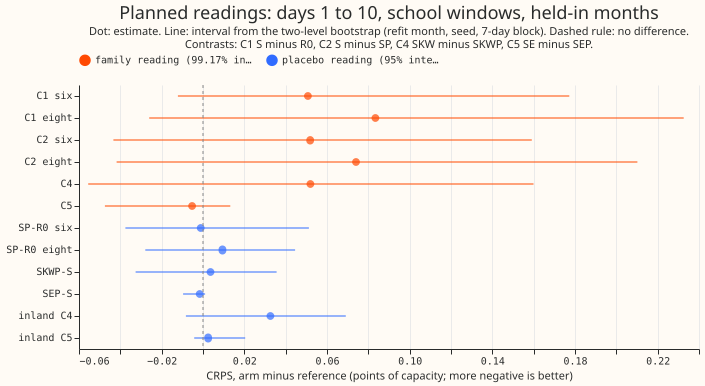
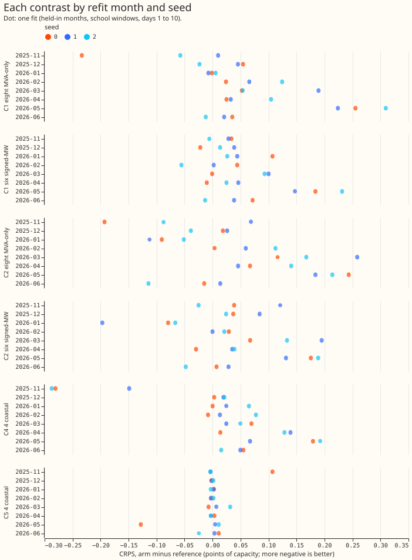
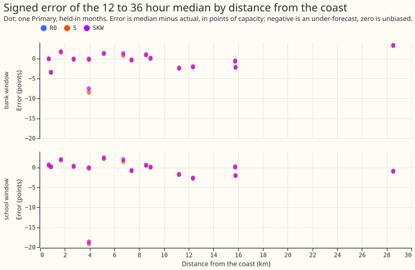

Does telling the Primaries' step-5 demand network when Lincolnshire's schools are on holiday, and how close each Primary is to the coast, lower its forecast error around school holidays and bank holidays, especially at the coastal Primaries and on warm, sunny holiday days?
This experiment asked whether the Primaries' step-5 demand network forecasts better around school holidays if it is told when Lincolnshire's schools are on holiday, and whether it forecasts the seaside Primaries better if it is also told how close each Primary is to the coast. The step-5 network is the neural network that forecasts the power drawn at 16 Primary substations in Lincolnshire up to 14 days ahead. On Saturday 2026-10-24, the first day of the October half-term, the network under-forecast four Primaries near the coast by 10 to 19 points of capacity, and a colleague suggested a "coastal" flag. We retrained the network from the frozen stage-1 weights of experiment 677 (building up the candidate demand network one component at a time) with school-holiday columns, with the coast distance added as input columns and as a term in the substation embedding, and with a placebo version of each signal. We scored the weeks around each school holiday and bank holiday at the coastal and inland Primaries.
Verdict
The verdict is inconclusive: no school-holiday or coast arm scored better than the control, and
every planned interval on the 8 held-in refit months includes zero. CRPS (the continuous ranked
probability score of the 11-level
quantile forecast) is in points of capacity, where one point is 1% of a Primary's capacity, and a
lower score is better. Every contrast below is the arm minus its reference, at days 1 to 10, on the
rows of the school windows (7 days before, the holiday block, and 7 days after) of the 8 held-in
refit months (2025-11 to 2026-06, valid times before 2026-07-01), so a positive number is worse.
Intervals are 99.17% (95% with a Bonferroni correction for 6 readings) from a two-level bootstrap
over refit months, seeds, and 7-day blocks.
| Reading | Arm minus reference | Six signed-MW Primaries | Eight MVA-only Primaries | 4 coastal Primaries |
|---|---|---|---|---|
| C1 | school columns (S) minus control (R0) |
+0.051 (-0.012 to +0.177) | +0.083 (-0.026 to +0.233) | not read |
| C2 | S minus shifted-calendar placebo (SP) |
+0.052 (-0.043 to +0.159) | +0.074 (-0.042 to +0.210) | not read |
| C4 | coast and weather columns (SKW) minus permuted twin (SKWP) |
not read | not read | +0.052 (-0.056 to +0.160) |
| C5 | coast term in the embedding (SE) minus permuted twin (SEP) |
not read | not read | -0.005 (-0.047 to +0.013) |
The placebos behave as they should. SP minus R0 is -0.001 at the six signed-MW Primaries
and +0.009 at the eight MVA-only Primaries, so in these fits a calendar shifted by 21 days left the
score unchanged, as did a permuted coast distance (SKWP minus S +0.004, SEP minus S -0.002).
The real school calendar scored 0.05 to 0.08 points worse than the control and than the shifted
calendar, although every planned interval includes zero.
In the school windows the mean CRPS is, at the six signed-MW Primaries, 3.300 for R0, 3.351 for
S, 3.299 for SP, 3.391 for SKW, 3.372 for SKWP, 3.349 for SE, and 3.349 for SEP; at the
eight MVA-only Primaries it is 3.733, 3.816, 3.742, 3.855, 3.822, 3.812, and 3.815; and at the 4
coastal Primaries (D2, D4, D9, and D19) it is 2.603, 2.709, 2.602, 2.764, 2.712, 2.702, and 2.707.
The manual heuristic scores 4.235, 4.684, and 3.635 in the same three groups, and climatology
scores 4.718, 5.531, and 3.802.
The school columns were worst on the first weekend of a school holiday. Against R0, the
contrast is +0.33 at the six signed-MW Primaries and +0.39 at the eight MVA-only Primaries, and
against SP the intervals exclude zero at both groups (+0.35, interval 0.03 to 0.88, at the six;
+0.43, interval 0.12 to
0.85, at the eight; 95% level). These windows were read after the first look at the results and are
not
corrected for the number of windows, so they do not decide the verdict. On
ordinary days the difference is small (-0.007 and -0.024 against R0).
The coast and weather columns lowered the error in October 2026, which no verdict reads. On the
school window of October 2026 (the half-term of 2026-10-26 to 2026-10-30, with the 7 days before and
after), SKW minus SKWP is -0.16 points at the 4 coastal Primaries (95% interval -0.31 to
-0.04), -0.05 at the eight MVA-only Primaries (-0.10 to -0.01), and -0.03 at the six signed-MW
Primaries (-0.07 to 0.00). In the same block the school columns moved the signed error of the
12-to-36-hour median on 2026-10-24 to 2026-11-01 towards zero by 2.4 to 4.0 points at D9, D19, and
D4 (S minus R0), against a prediction of at least 3 points (P6): D4 met it (3.98), D19 (2.58)
and D9 (2.43) did not. The shifted-calendar arm SP moved those errors by less than 0.2 points.
All of the October 2026 readings come from one half-term, and the clock change on 2026-10-25 falls
in the 7 days before the half-term.
Four of the seven predictions missed, one held, one partly held, and one made no claim. P1 (C1
-0.03 to -0.10) and P2 (C2 -0.02 to -0.08) missed because both contrasts are positive. P3 (C4 0.00
to -0.08) missed because C4 is +0.052. P4 (the C4 gain is at least 0.04 larger on warm, sunny
holiday days) missed in direction: the difference is +0.143 points (-0.008 to +0.379), so the
coast and weather columns did no better on warm, sunny days. P5 (C5 within ±0.02) held. P6 partly
held: D4 met the threshold and D19 and D9 did not. P7 (July to September 2026) made no prediction:
S minus R0 there is +0.002 at
the six and +0.020 at the eight.
Figures



Checks
- A fresh Sonnet agent re-derived C1, C2, C4, C5, the placebo readings, and the held-in row
selection from the raw cell files without the scorer's code: every estimate matched
readings.csvto 1e-17, no row dated on or after 2026-07-01 entered a held-in reading, and the verdict rule 6 holds. It did not re-derive the bootstrap intervals. - The replay gate passed: the worst deviation of the replayed control from experiment 677's
stored forecasts is 5.1e-6 of capacity, against a tolerance of 5e-4. The held-in readings use the
stored forecasts as
R0; the replay runs only in October 2026. - No look-ahead: no new column reads ERA5, and W3's baseline reads only weather runs issued before the forecast origin (a test and a runtime assertion).
- Reviews: a Sonnet numbers review corrected four figures in this page (a rounding, a rounding, a superlative, and the order of the largest per-Primary increases), and a Sonnet prose review's findings were applied.
- Weighting of C4: the C4 estimate (+0.052) is weighted by row. The unweighted mean over the 24 fits is +0.020, and C4 is negative in 4 of the 24 fits and in 1 of the 8 refit months.
- Not done: the per-Primary and leave-one-out tables beyond
scores/readings.csv, the forecast series around each half-term, the loss-against-epoch figure, the production-variant check (dropping the two Copernicus Atmosphere Monitoring Service columns), and part 2 (school columns in the date-time encoder, where part 1 is this experiment's input columns). - Per-Primary C1 readings: D19 is +0.28, D10 +0.11, and D9 +0.10, and no Primary gains beyond noise. D15 and D18, which are reported beside the counted groups, are +0.01 and +0.04.
Plan, written before the run
What is already known
The step-5 network sees bank holidays and Christmas but not school holidays. Its 21 date-time
columns hold the sun position (3), two hour-of-day harmonics (4), the day of the week (7), the
lockdown flag covid, three Christmas columns, bank_holiday, nearest_days (signed days to the
nearest England bank holiday, clipped to ±7, divided by 7 and standardised), and nearest_inside.
Saturday 2026-10-24 had no bank holiday within 7 days, so the network saw an ordinary October
Saturday.
Each Primary has a free 8-number embedding, which every encoder and the mixer read
(e00559_model.ModularMdn, e00591_model.AuxLagMdn). Stage 1 pre-trains the encoders on ERA5 and
CAMS rows from 2019-09. Stage 2 attaches a fresh mixer and trains it, with the weather and date-time
encoders frozen and the embedding, lag encoder, and per-Primary output offset trainable. Stage 3
fine-tunes the same parameters with recency weights and injected load shifts (e00574_fit.train,
step2, fine_tune).
A per-Primary constant cannot add information that the free embedding lacks. The network can already represent any function of a Primary's coast distance through the embedding. A coast column can therefore change the forecast only by sharing a learned response across Primaries in proportion to their closeness to the coast. Sharing matters most where each Primary has few examples. A placebo with permuted coast distances has the same capacity, so the contrast against it tests the geography alone.
The stored forecasts show the October 2026 under-forecast and no evidence either way over the
scored year. The diagnostic e00735_diagnostic.py read experiment 677's stored k1_5w_sp1
forecasts at 12 to 36 hours, for seed 1 only (line 119). On 2026-10-24 the largest under-forecasts
were D19 -18.7, D18 -16.3, D4 -15.7, D9 -10.8, D8 -9.8, and D10 -9.7 points. Over 2025-11 to
2026-06 the correlation across the 16 Primaries between coast distance in kilometres (not
closeness) and the excess signed error on holiday days was +0.14 for school-holiday days, -0.10 for
half-term days, and +0.12 for bank holidays. A positive correlation with distance means that
Primaries nearer the coast have the more negative excess error, which weakly favours the coast
hypothesis for two of the three kinds of day. With |r| of at most 0.14 across 16 Primaries and one
seed, the diagnostic is no evidence either way, and it has already looked at the held-in months.
Maintainer decisions this plan follows
- Fit option B, about 5 GPU-process-hours. The maintainer approved about 1 hour above the 4-hour cap. Anything above 5.5 GPU-process-hours needs a new request.
- October 2026 and July to September 2026 are scored as two named blocks, by the maintainer's decision of 2026-11-27, which overrides the demand-v2 rule that no experiment scores valid times on or after 2026-07-01. The verdict rests on the 8 held-in refit months (2025-11 to 2026-06, valid times before 2026-07-01), which were fixed before the idea arose. Both named blocks are pre-named contrasts that decide nothing and are never pooled with the held-in result.
- Scoring July to October 2026 uses up that holdout for any later adoption of these columns. The
release-modelskill reads the holdout once, so a later adoption needs months from 2026-11 onward. The 3 km coastal cut was chosen after the October errors at D9, D4, and D19 were seen. D18 (3.94 km), D8 (6.72 km), and D10 (15.76 km) under-forecast on 2026-10-24 as well, so the slope of each Primary's paired difference against its distance is a co-primary description beside the 3 km cut. - Both entry points for the coast signal are tried, each with a permuted twin: input columns (SKW and SKWP) and a term in the Primary embedding (SE and SEP).
- Holiday behaviour from year to year is checked, and one arm (SKW) can represent the interaction of school holiday, coast, and warm, sunny weather.
- Sonnet writes the code and an Opus agent reviews it before any fit. No XGBoost.
The arms
Every arm reruns stages 2 and 3 and the prediction pass of arm 9a for each refit month and seed,
from experiment 677's stored stage-1 weights (chains/5/<month>/work/pretrained_P2/, read only).
The new columns enter the stage-2 mixer with first-layer weights initialised to zero, so every arm
starts stage 2 as exactly the control's network. Stage 2 trains the mixer for up to 60 epochs, which
is where a new column can be learned. Stage 3 stores its first epoch in 72% of fits (experiment
731), too short to learn a new column from zero.
| Arm | In words | Columns added to the mixer | Coast in the embedding |
|---|---|---|---|
| R0 | the control: arm 9a replayed through this experiment's runner | none | no |
| S | school holidays | S1 to S3 | no |
| SP | placebo for S: the school calendar moved 21 days later | S1 to S3, shifted | no |
| SKW | school holidays, coast interactions, and coast × school × weather | S1 to S3, K1 to K5, W1 to W4 | no |
| SKWP | placebo for SKW: SKW with the coast closeness permuted between Primaries | as SKW, permuted | no |
| SE | school holidays, with the coast closeness as a term in the embedding | S1 to S3 | yes |
| SEP | placebo for SE: SE with the coast closeness permuted | S1 to S3 | yes, permuted |
SK (school plus coast interactions without weather) is not run, because its only reading, SK minus S, had no placebo twin. SKW minus S stays as a descriptive reading.
Exact definition of each signal
The coast closeness c falls from 0.87 at the nearest Primary to under 0.05 beyond 15 km.
c = exp(-d / 5 km), where d is the distance in kilometres from the Primary's latitude and
longitude (primaries.json of the experiment 705 bundle) to the boundary of
studies/beam_diffuse_split/domains/great_britain.geojson, in EPSG:27700, as e00735_diagnostic.py
computes it. c is static, known at every origin, and not standardised, so products with an
indicator are zero off the indicator. Values: D9 0.87, D4 0.84, D19 0.71, D2 0.58, D15 0.46, D18
0.46, D5 0.35, D8 0.26, D14 0.23, D21 0.18, D3 0.17, D16 0.11, D12 0.08, D10 0.04, D22 0.04, D11
0.003.
Every new column uses one local-date convention: the local date (Europe/London) of the stamp
minus 15 minutes. Stamps mark the end of a half-hour. The existing bank_holiday and
day_of_week_local columns use the stamp itself (e00032_common, lines 301 to 310) and so label
the 00:00 stamp as the next day. The new columns recompute the bank-holiday and weekend flags from
the shifted date and never multiply by the existing columns.
School columns. A holiday block runs from the day after a term's last day to the day before the
next term's first day, weekends included. S1 school_off is 1 on every date of a block. S2
school_first_weekend is 1 on the first Saturday and Sunday of a block (inside the block, for a
block that starts on a weekday). S3 school_half_term is 1 inside a block of at most 10 days, so
the network can tell a half-term from a long holiday.
School calendar sources. Dates for 2021-22 to 2025-26 come from experiment 11's
lincolnshire_term_dates.csv, which is immutable and stays as it is. The experiment reads, in
addition, lincolnshire_term_dates_2026_27.csv in its own folder, which holds only terms 1 and 2 of
2026-27 because only those are used: term 1 runs 2026-09-03 to 2026-10-23 and term 2 runs 2026-11-02
to 2026-12-18, so the October half-term block is 2026-10-24 (a Saturday) to 2026-11-01. The source
is a third-party
page,
fetched with the maintainer's permission and not checked against the council's own page, as the
csv's source column says. It is the only new data source. Dates after 2026-12-18 are unknown, so
the calendar ends on 2026-11-30.
Lincolnshire's calendar is a proxy. The 2024-25 rows are marked source=school, and academies
set their own dates. Resort demand also follows the school calendars of the visitors' home counties
(the East Midlands and Yorkshire), which the experiment does not model.
School placebo (SP). S1 to S3 read the real calendar 21 days earlier, so each block appears 21 days later on its real weekdays. The placebo overlaps the real windows: placebo Christmas (2026-01-10 to 01-26) overlaps the real "7 days after" window, and placebo Easter (2026-04-24 to 05-11) overlaps the real "after" window and the 2026-05-04 bank holiday. The summer block overlaps its real dates by about 3 weeks. SP can therefore move the score, which is why SP is read against R0 as well as against S. A test prints the share of placebo holiday days that are real holiday days. In the held-in months (November 2025 to June 2026) no shifted school-holiday day is also a real school-holiday day, because the shifted Christmas, Easter, and half-term blocks fall on real term days (the real "after" windows). In the July to September block the shifted calendar coincides with the real holiday on about half of the holiday days, so S minus SP understates the school effect there. That block decides nothing, and the page states this limit.
Coast interaction columns (SKW and SKWP). K1 c; K2 c × school_off; K3
c × school_first_weekend; K4 c × bank_holiday; K5 c × weekend (Saturday or Sunday). K1 alone
adds nothing an embedding cannot do; it gives the products their main effect.
Weather interaction columns (SKW and SKWP). W1 to W3 are products with c × school_off, read at
the row's valid time from the 00Z ECMWF ensemble run issued 9 hours before the 09:00 UTC origin.
- W1 warm for the month: the
t_max_dayB1 column (input index 52) minus its mean over the same calendar month of the refit's training rows at that Primary, divided by the standard deviation of those anomalies, clipped to ±3. The standardised column is negative all February and positive all Easter, so it would encode which block a row is in. - W2 sunny for the month: the same anomaly of the
sw_mean_24hcolumn (index 56). - W3 first warm day: the valid day's
t_max_day(in degrees Celsius) minus the mean daily maximum 2 m temperature over the 7 local days ending 24 hours before the origin (from the expected-weather table, which uses the freshest run issued before each half-hour), divided by 5 K and clipped to ±3. Every input of W3 was issued before the origin. - W4
c × W1without the school factor, so that a warm-day coastal effect outside school holidays does not load onto W1.
Look-ahead check for the weather columns. For a target day 1 to 14 days after the forecast origin, every weather input of W1 to W4 was available at the origin:
- W1 and W2 come from the row's own B1 columns
t_max_dayandsw_mean_24h, which experiment 437 builds from the ensemble-mean forecast of the ECMWF ensemble run issued at the origin, taken over the target local day. The anomaly means and standard deviations come from the refit's training rows only. - W3's baseline comes from the expected-weather table, which holds the ensemble mean of each run's first day (leads 9.5 to 33 hours), for the 7 local days that end at least 24 hours before the origin. A runtime assertion checks that the latest run read was issued at or before the origin.
- W4 is the coast closeness times W1, so it adds no weather source.
- No new column reads ERA5, CAMS, or realised weather. ERA5 and CAMS enter only the frozen stage-1 pre-training, which does not see the new columns, and the warm-and-sunny split of the results uses realised weather for analysis only.
- Tests:
test_w3_causalchanges every expected-weather day after the last complete day and checks that W3's baseline does not move; a second test checks the latest run origin the baseline reads;test_columns_read_no_era5checks that the column, model, and runner code contains no ERA5 reference.
Coast in the embedding (SE and SEP). The embedding of Primary i becomes E[i] + c_i × u, where
u is a learned 8-number vector initialised to zero, applied wherever the embedding is read.
Because
E[i] stays free, SE can represent exactly the functions the control can and differs from S only in
how updates are shared across Primaries. In SEP the term uses the permuted c.
Placebo permutation. The 16 coast values are permuted with numpy.random.default_rng(735) until
no Primary keeps its value and the correlation between permuted and true c lies within ±0.3. The
permutation is saved and shared by every month, seed, and permuted arm.
Holiday behaviour changes from year to year
The new columns are learned only from rows after 2024-04-01, all of them after COVID. Stages 2
and 3 train on ENS rows within 730 days before each refit, and the ENS archive starts on 2024-04-01.
The covid column and the 2019 pre-training act only on the frozen encoders, which the new columns
never enter.
Each refit sees each kind of holiday block once or twice, and often at few leads. Each refit
holds out one validation week per cycle and purges 15 days before and 9 days after
(e00422_prep.purge_masks). According to the plan review, the October 2025 and February 2025
half-terms are entirely purged, the May 2025 half-term is held out, and Easter 2026 is mostly
purged,
so the 2026-10 refit sees the 2025 half-term only at leads of 6 to 14 days. The columns phase
tabulates the training rows that each block contributes to each refit by lead band, and the write-up
reports the table.
A per-year check, from the cleaned power and without any fit. e00735_regime.py computes, for
each Primary, school-holiday block, and bank holiday from 2021-22 to October 2026, the mean demand
on the block's days minus the mean on the same weekdays and half-hours of the two term-time weeks
on either side, in points of capacity, and plots it against coast distance, one panel per academic
year. Term dates before 2021-09 are not on disk. The write-up reports whether the coastal holiday
response changes sign or size between years. One scored year cannot tell a lasting holiday effect
from that year's behaviour, and the held-in months hold 4 full school-holiday blocks plus a 2-day
stub, so the write-up states this limit beside the verdict.
Scored period, windows, and splits
The scored rows are those of backtest_year_2025_11_to_2026_10_daily_12utc in 12 refit months.
Origins are daily at 12:00 UTC, with 672 half-hours of lead and 16 Primaries each, against cleaned
actuals with the substation_zero half-hours dropped (counts per fold reported) and D15 and D18 cut
before 2025-03-01. The held-in block (refits 2025-11 to 2026-06) carries the verdict. The July to
September block (refits 2026-07 to 2026-09) and the October block (refit 2026-10, valid times to the
end of the stored power) are labelled "tuning-adjacent" and decide nothing.
Holiday blocks in the scored rows. Held-in: the end of the October 2025 half-term (2025-11-01 and 11-02, a stub with no "before" window, counted out of every block-sign statement); Christmas 2025-12-20 to 2026-01-05; February half-term 2026-02-14 to 02-22; Easter 2026-04-03 to 04-20; May half-term 2026-05-23 to 05-31. July to September: the summer holiday 2026-07-23 to 09-02. October: half-term 2026-10-24 to 11-01, its "after" window cut where the power stops. Bank holidays held-in: 2025-12-25, 12-26, 2026-01-01, 04-03, 04-06, 05-04, and 05-25; July to September: 2026-08-31; none in October 2026.
Pre-registered windows, by local date of the valid time. For each school block: days 7 to 4 before; days 3 to 1 before; the first weekend; the rest of the block; the first 3 days after term resumes; and days 4 to 7 after. The union (7 days before through 7 days after) is the "school window", which carries the headline. For each bank holiday: the day before, the day itself, the day after, and the weekend it extends, if any. Ordinary days outside every window are the comparison slice. Christmas Day and Boxing Day count in both the Christmas block and the bank-holiday slice.
Weather split of holiday days, on realised weather. A Primary-day in a window is "warm and sunny" when its ERA5 daily maximum 2 m temperature and daily mean shortwave both reach the same calendar month's 2019 to 2025 median at that Primary, "cold or wet" when the daily maximum is below that median or the ERA5 daily precipitation is at least 1 mm, and "mixed" otherwise. Realised weather makes the split the same for every arm. The first CPU phase prints how many Primary-days of each kind each window holds, before any fit, and the write-up reports those counts beside every split result. If ERA5 does not yet cover November 2026, the ENS analysis proxy of experiment 704 stands in for the October block, and the page says so.
Groups. The six signed-MW Primaries are D5, D9, D10, D11, D14, and D16. The eight MVA-only Primaries (every number labelled "reactive power assumed zero") are D2, D3, D4, D8, D12, D19, D21, and D22. D15 and D18 are reported only. The 4 coastal Primaries within 3 km are D9 (signed-MW) and D2, D4, and D19 (MVA-only), each reported by group as well as pooled. The inland placebo Primaries are D11, D10, and D22. The slope of each Primary's paired difference against its distance in kilometres, with and without D15 and with a bootstrap over Primaries, is a co-primary description, and the same slope for the placebo arm is its placebo.
Planned contrasts, intervals, and placebo readings
The family has 6 readings at 99.17%, each on the school-window rows at days 1 to 10 of the held-in months: C1 (S minus R0) and C2 (S minus SP), each at the six and at the eight; C4 (SKW minus SKWP) and C5 (SE minus SEP), each at the 4 coastal Primaries, with the 3 inland Primaries as the placebo group.
Placebo readings, at 95%, gate the claims through the decision rule: SP minus R0 at both groups, and SKWP minus S and SEP minus S at the 4 coastal Primaries. Each fails when it gains.
Descriptive readings, at 95%, decide nothing. No-harm contrasts of every arm against R0 per
group, on all 12 refits as well as on the held-in rows; SKW minus S; SKW minus SKWP on warm, sunny
days against cold or wet days (P4); each contrast on the bank-holiday slice and in each finer
window; each contrast in October 2026 (at D19, D4, D9, and all 16 Primaries) and in July to
September 2026; per-Primary and leave-one-out readings; the slope against distance; N1 (R0 minus
stored); a table of every contrast by refit month and seed (24 held-in fits).
What the intervals can show. All rows of one refit month come from the same 3 fitted networks,
so an arm difference carries a random effect for each fit. Experiment 704 reported that the
control's pooled CRPS differs by up to 0.09 points between seeds, more than the P1 band. The
single-seed _resample_bounds of studies.bootstrap and a bootstrap of blocks inside fixed fits
would treat blocks that share a fit as independent and give intervals that are too narrow. The
two-level bootstrap resamples refit months and seeds first. The sign rules (6 of 8 months, 18 of 24
fits) add a check that does not use the bootstrap, and even 6 of 8 months has probability 0.145
under no effect. The experiment can show a direction and a size, and the likeliest verdict is
inconclusive. Per-block results are tabled, never given intervals.
Reported for every arm and window: CRPS, normalised MAE of the median, signed error of the median, q01, q05, q95, and q99 coverage and pinball loss, the avoidable-curtailment cost, and cold winter nights, per group and Primary and by lead band; the whole-year CRPS and MAE in every demand-v2 lead band and slice; climatology and the manual heuristic on the same rows.
Control and noise floor
R0 is the fair control, because it shares the runner, code state, and run date of the new arms.
Experiment 684 found the chain from stage 2 onwards deterministic, and experiment 731's stage-3
replay matched the stored forecasts to 9e-7 of capacity. Experiment 731 replayed stage 3 only
(e00731_k1.py asserts command == "fit"), so a replay of stage 2 is untested. R0 therefore runs
first in one gate month (2026-10). If every quantile of R0 is within 5e-4 of capacity (experiment
704's replay tolerance) of experiment 677's stored k1_5w_sp1 in that month, the stored forecasts
are R0 in the other 11 months and N1 is reported. Otherwise R0 runs in all 12 months (+0.73
GPU-process-hours). The gate compares rows common to both, and reports how many rows differ:
experiment 731 dropped 24,060 D15 and D18 rows because the cleaned power table was rewritten.
The network is arm 9a with the two CAMS columns, not the production variant without them. Stored stage-1 weights exist for all 12 months only for arm 9a. D15 alone drove the arm difference in experiment 704, so the production port of a winner is re-checked on experiment 704's arm B weights (open question 1). The four load-shift scenarios are not required, because no arm changes the lags, the injected events, or the masks.
Tests to add before any fit
- Every attribute taken from an imported module exists (
hasattr). - The school columns equal the two csv files on every date from 2024-04-01 to 2026-11-30 (every block start, end, and first weekend); S3 is 1 only in blocks of at most 10 days.
- Every new column uses the stamp-minus-15-minutes local date, at the 00:00 stamp and across the clock changes of 2025-10-26, 2026-03-29, and 2026-10-25.
- The placebo calendar is the real calendar 21 days later on the same weekdays; the share of placebo holiday days that are real holiday days is printed by block and window.
- The coast permutation is a derangement, fixed by the seed.
- Every window mask against hand-written dates for two blocks, at midnight and at a 00:30 stamp after a clock change.
- W3 is causal (experiment 437's
checkpattern), and W1 and W2 equal the monthly anomaly of the B1 columns. - Zero start: with the new columns' weights at zero, every arm's network at the start of stage 2 gives R0's outputs on 1,000 rows, with labels attached and detached.
- The new columns reach stage-3 rows; the arm's files are written under experiment 735's folder and the hashes of 677's files are unchanged.
Smoke test
One refit month (2026-01), seed 0, every arm: stages 2 and 3 for one epoch each, a prediction pass,
and a scorer read on the stage-3 validation week only, writing to .claude/scratch/e735_smoke/. The
smoke test checks that each new column is non-zero where it should be (S1 on holiday rows, K2 at the
coastal Primaries on holiday rows, W1 to W3 on SKW's rows), prints one example row per arm, and
measures the time per arm-month for the GPU-hours check.
GPU-process-hours
One arm-month of stages 2, 3, and the prediction pass, for 3 seeds, takes about 4.0 minutes on the
GPU. Experiment 704's logs show stage 2 at 1.5 to 1.8 minutes, stage 3 at 1.3 to 1.5, and the
prediction pass at about 1.0. Experiment 731's fit log shows about 10 seconds of training per seed
inside a process of about 1.45 minutes, so most of the process time is CPU row building.
Pre-training
is not rerun.
| Item | Arm-months | Hours |
|---|---|---|
| Smoke test (7 arms, 3 processes) | n/a | 0.35 |
| R0 in the gate month | 1 | 0.07 |
| S, SP, SKW, SKWP, SE, SEP, each in 12 refits | 72 | 4.80 |
| Expected total | 73 | 5.22 |
| If the replay gate fails: R0 in the other 11 months | +11 | +0.73 (total 5.95) |
The line of 5.5 hours holds if the measured time stays at or below 4.2 minutes per arm-month,
because 73 times 4.2 minutes plus 0.35 hours is 5.5 hours. The smoke test measures the time, and the
check runs before the fit phase. Building W3 on 2 cores may push the time up. If the harness can
build each month's rows once for all arms, the saving is recorded and not assumed.
If the measured time or a failed gate takes the total above 5.5 hours, drop SEP first, in every month (saving 0.80 hours, so a failed gate totals 5.15), then SE (another 0.80), leaving SE minus S as a descriptive reading. Never drop SP or SKWP while the arm they test runs. The phase runner stops at 5.5 GPU-process-hours and asks.
Memory for scoring
The scorer's peak should be about 4 GB. One arm and seed over 12 refits is about 3.9 million
rows
of 11 float32 quantiles plus keys (about 300 MB). The scorer streams one arm and seed at a time
against R0 and builds the bootstrap loss frame from the window rows at days 1 to 10 only (about 1.2
million rows). The string time key that losses_for_bootstrap builds adds about 120 MB per arm
and seed. The scorer runs under MemoryMax=12G and records its measured peak.
Figures planned
- Signed error of the 12 to 36 hour median on holiday days against coast distance, for R0, S, and SKW, one panel per block type.
- Observed demand and the R0, S, and SKW medians with 90% bands around each half-term, 14 days before to 7 days after, for D19, D4, D9, D11, D10, and D22 (substations may be named; no metered generator appears).
- C1, C2, C4, and C5 with their intervals, by finer window and by weather split with the counts, beside the placebo readings; each paired difference by refit month and seed; the slope against distance for SKW and SKWP; the per-year regime check.
- A day-ahead forecast and the full 14-day horizon of one forecast, for D19 around 2026-10-24.
- The new columns against date for the 4 coastal and 2 inland Primaries; training and validation loss against epoch (refit 2026-10, seed 0, every arm); per-group tail results by window.
Checks the write-up will carry
Median minus mean forecast per Primary; the MAE of the median beside every CRPS contrast; the replay gate and N1; the zero-start test; the placebo overlap share; the holiday-day counts by weather kind; dropped half-hours per fold; which audit triggers fired; leave-one-out contrasts (including D15); the tails; the table of training rows per block and refit.
Standing practices
- Followed: monthly refits; cleaned data with dropped half-hours counted; the D15 and D18 cut; every fitted network and loss history saved; stored predictions reused; tails, avoidable-curtailment cost, and cold winter nights reported; example forecasts; loss plots; a test that every input with a valid time is known at the origin; streamed scoring with a stated peak; a "fits starting" line, time log, and GPU-hours stop; review markers; a draft pull request; anonymisation.
- Departed from: the four-month screen (a holiday signal acts on a few blocks a year); the demand-v2 interval for the window contrasts (the two-level bootstrap); the 2026-07-01 holdout, by the maintainer's decision.
- Not applicable: load-shift plots, the synthetic world gallery (the smoke test still checks the new columns are non-zero), and the calendar-memorisation control (no day-of-year column is added).
Advice from earlier experiments
Followed: experiment 11's placebo calendar shifted by a fixed number of days (SP) and its call for more half-terms (still few here); experiment 6's scoring of a calendar column on special-day windows; experiment 704's several seeds, leave-one-Primary-out, and 5e-4 replay tolerance; experiment 731's "a zero-size placebo is not an independent control"; experiment 677's monthly refits. Departed from: experiment 325's six seed sets (budget).
Review gates, phase by phase
columns(CPU): build and test the columns, the per-year check, the weather counts, and the table of training rows; the manager views the column gallery.- Opus code review of every script, triage, a re-check of each edited script; marker
smoke. smoke(GPU, about 0.35 hours); markergate.gate: R0 in 2026-10 againststored; markerfit, with the arm list fixed from the measured times.fit(GPU), stopping at 5.5 GPU-process-hours; markerscore.score(CPU), then a Sonnet result review that re-derives C1, C2, C4, and C5 from the raw fits, the audit triggers, the write-up, a Sonnet numbers review, and a Sonnet prose review.
Traps found while planning
step2silently reuses experiment 677's weights. The runner setse.W = CHAIN, andstep2skips any seed whose file exists, so pointingCHAIN677at 677's chain would skip stage 2 and could write into 677's folder. Point the chain at the arm's own folder and read onlypretrained_P2from 677.AuxLagMdn.forwarddetects the injection labels byx.shape[1] == label_col + 2, so appended columns break the detection unlesslabel_colmoves past them.fresh_mixerre-draws every weight from seed 12345 for the layer's width, so a wider mixer would change the old columns' weights too. Draw the control's width, then pad zero columns.- The embedding term
ubreaks the missing-key assertion ine00572_model.load_lag_pre_into_ft(line 75), which allows onlymixer_ft.*and two knot keys to be missing. - The
fitcommand installsarm.build_month_synonly whenMINE.syntheticis set (e00677_k1.py, lines 167 to 171), andbuild_month_syncalls the_build_month_p5captured whene00591_armis imported. A wrapper one.k.build_monthis dropped in stage 3. Wraparm.build_month_syn(or patcharm._build_month_p5) and test that the new columns reach stage-3 rows. losses_for_bootstraprefuses a frame with amonthcolumn (RESERVED_LOSS_COLUMNS), so the scorer relabels to 7-day blocks of valid dates after the call.e00011_term_dates.LAST_DATEis 2026-07-31, andcalendar_framefilters to it, so October 2026 would silently read as term time.validatealso requires six terms per academic year, so the two-term 2026-27 file fails it. The experiment's own calendar module reads both csv files, ends on 2026-11-30, and runs its own checks (order, no overlap, weekday starts, gap sizes).- Stage 3 is in effect one epoch (experiment 731), so the columns enter at stage 2.
- The stored power may stop before the October fold's longest leads (about 2026-10-26), and the scorer reports rows per lead band.
- The clocks change on Sunday 2026-10-25, inside the October half-term.
- D15 and D18 share one location, and D2 and D4 share one weather cell, so their coast values and weather columns are identical pairs.
Method
Architecture
- The step-5 network is arm 9a (
k1_5w_sp1) of experiment 677: a weather encoder and a date-time encoder pre-trained on ERA5 and CAMS rows, a shared lag encoder, an 8-number embedding and an output offset per Primary, and a mixer that outputs a three-component mixture with 11 quantile levels. - Each new arm adds 3 to 12 zero-initialised columns to the mixer's input, or a term
c × uin the embedding (SE and SEP), as defined above. The encoders take no new column. - Weather inputs come from the 00Z ECMWF ensemble run issued 9 hours before the 09:00 UTC origin, and lags follow the 24-hour rule, so no input is later than the origin (W3 has a causality test).
Training regime
- Stages 2 and 3 train on ENS rows within 730 days before each of 12 monthly refits (2025-11 to 2026-10), seeds 0 to 2, on cleaned power with D15 and D18 cut before 2025-03-01, from experiment 677's frozen stage-1 weights.
- Stage 2 trains the mixer for up to 60 epochs without recency weights; stage 3 fine-tunes with recency weights and injected load shifts, with experiment 677's loss, optimiser, and validation weeks. Placebo arms differ only in the shifted calendar or permuted coast closeness. The run takes 5.83 GPU-process-hours.
Measurement
- The scored rows are 12 refit months of daily 12:00 UTC origins at days 1 to 10 and every demand-v2 lead band, against cleaned actuals. The 8 held-in months carry the verdict.
- The metrics are CRPS, normalised MAE of the median, signed error, and the tails, per group,
Primary,
window, and weather split. The baselines are R0,
stored, the manual heuristic, and climatology. - Intervals, sign rules, placebo readings, and the verdict follow the decision rule above.
Files
e00735_diagnostic.py(already run): reads experiment 677's stored forecasts; computes the coast distance and the holiday-day error diagnostic.lincolnshire_term_dates_2026_27.csv: terms 1 and 2 of 2026-27, read in addition to experiment 11's csv.e00735_columns.py: the coast closeness, the school calendar (both csv files), the placebo calendar, the coast permutation, and W1 to W4.e00735_model.py: a subclass ofe00591_model.AuxLagMdnwith the extra mixer columns, the embedding term, and a zero-paddingload_state_dict.e00735_k1.py: a patched copy of experiment 731'se00731_k1.pywith markedE00735 PATCHblocks.e00735_run.shande00735_phases.py: the driver and phase runner (columns,smoke,gate,fit,score), with review markers, one GPU process,MemoryMax=12G, the time log, and the 5.5-hour stop.e00735_windows.py: window, weather-split, and group masks.e00735_score.py: the scorer.e00735_regime.py,e00735_figures.py, ande00735_tests_known_answer.py.- Read: experiment 677's
chains/5/<month>/work/pretrained_P2/weights and stored forecasts; experiment 704's arm B forecasts; the experiment 705 bundle'sprimaries.json; experiment 437's B1 table; the cleaned power table. Written:data/ml-experiments/00735-*/(fits, loss histories, predictions, the permutation, logs).